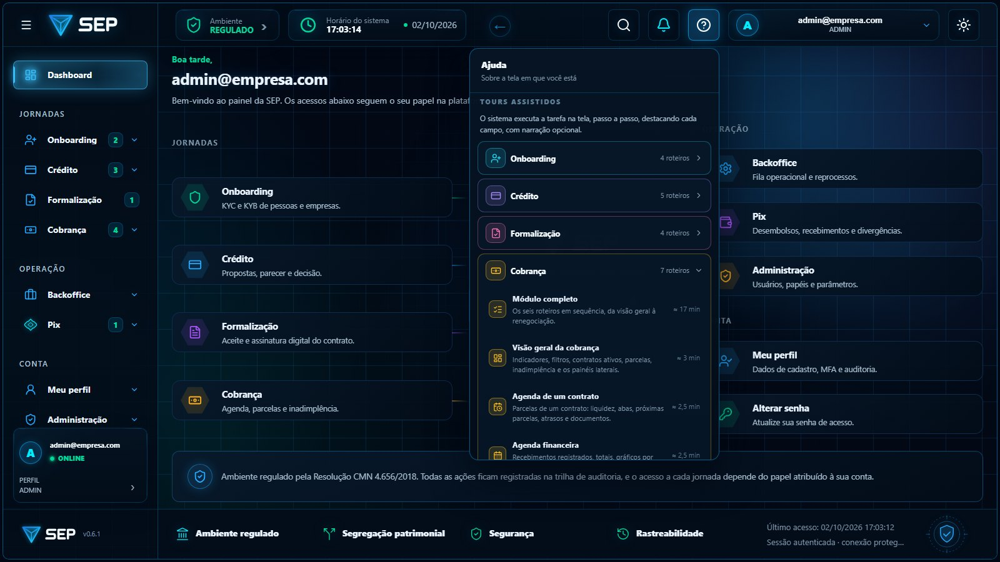

Por tarefa
O módulo completo ou uma tarefa só. Quem precisa conhecer apenas a inadimplência abre aquele roteiro, em dois minutos.
Pelo papel
O painel só lista o que a conta alcança. Roteiros que dependem de TOTP aparecem desabilitados, com o motivo e o que fazer.
Pela conta
Na jornada da credora, cada roteiro diz com qual conta de exemplo funciona: quem já tem credora, quem ainda vai cadastrar.